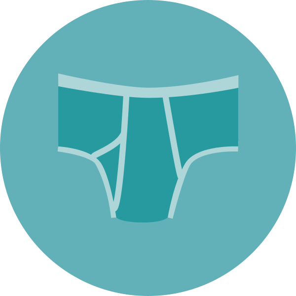

About
Blank Wordpress Theme that's easy to bring in your own markup, stylesheets and scripts to make custom Wordpress sites

Built to Customize

Absolutely Minimum

Starter Functions
This has the essential files and no more than that to build out your custom theme. It was made for my client projects.
This is sort of a mashup of several popular blank themes: HTML5Blank, DigWP and _s.